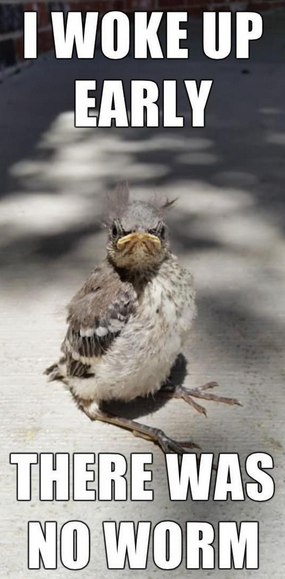

name: introduction class: middle, center # Boost your product with FOSS 🚀 ##### For FOSS Sri Lanka ##### By [Lahiru Himesh Madusanka](https://sdglhm.com/) --- name: about_me class: middle, center # Lahiru Himesh Madusanka ### FOSS Representative ### Mozilla Representative ##### Reach me @sdglhm --- name: introduction_2s class: middle, center # Have you ever faced a blocker when designing the next Facebook? --- name: zuck_think class: middle, center # I showed you my code, please respond --- name: why_company_prefer class: middle, center # Why company prefer FOSS solutions? # 😍 --- name: why_company_prefer_2 class: middle, center ### Easy to use ⚙️ ### Less licensing 📑 ### Can modify 🍽 ### Well, it's free 💸 --- name: faster_execution class: middle, center # Faster execution  --- name: faster_execution_2 class: middle, center # Bring your product early ⏳ ### Early to market has benefits over late offers, early adoptors help massively --- name: agility class: middle, center # I'm so agile 🔁 ### Open source solutions help when you need to be agile --- name: dont_reinvent_wheel class: middle, center # Don't reinvent the wheel <img src="src/reinvent_the_wheel.png" alt="" srcset=""> <p><small>source: xkcd</small></p> --- name: burn_money class: middle, center # Don't burn your runway 🏃♀️ #### Cash burns hotter than a freshly dropped mix-tape <img src="src/tenor.gif" alt="" srcset=""> --- name: licensing_hitatus class: middle, center # How to license my product ### Depends on your product model --- name: extra class: middle, center # Extra! Extra! ### We're rebuilding lkrug - Sri Lanka Ruby User Group <img src="src/Artboard 2@4x.png" alt="" srcset="" width="400px"/> --- class: middle, center # FOSS Sri Lanka ### Join with us ### https://foss.lk ### https://forum.foss.lk --- name: thank_you class: middle, center # Thank you 🤗 ### Lahiru Himesh Madusanka